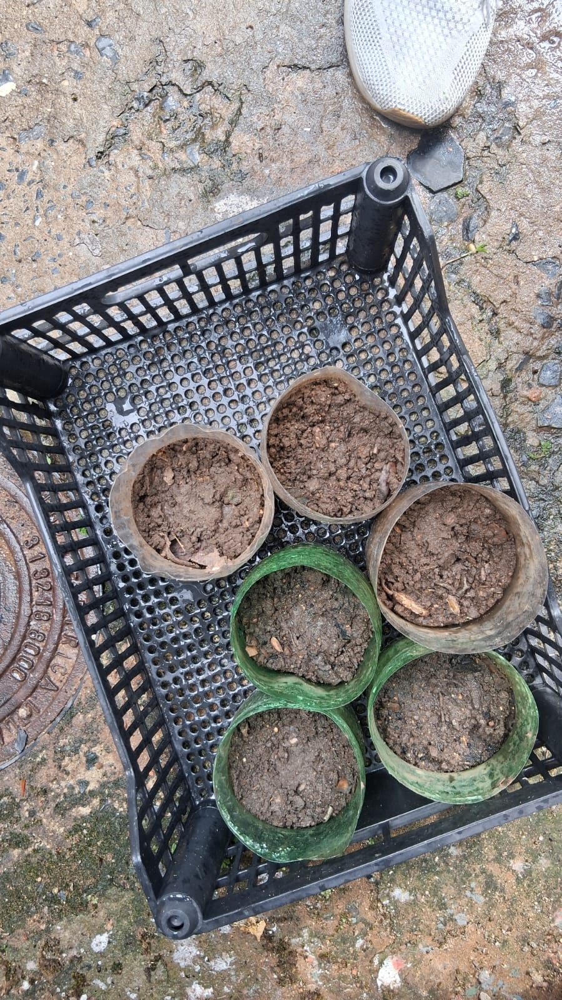

A influência das mudanças climáticas na qualidade alimentar da população.
Conheça a pesquisa
As mudanças climáticas têm influenciado as condições ambientais relacionadas à disponibilidade de alimentos.
Neste estudo, investigamos a relação entre as mudanças climáticas, a produção agrícola, os preços dos alimentos e seus possíveis reflexos na qualidade alimentar da população.
Uma investigação sobre clima, agricultura, alimentação e segurança alimentar.
A pesquisa está organizada em cinco eixos que permitem analisar diferentes dimensões da relação entre mudanças climáticas, produção agrícola e alimentação.
Relação entre o encarecimento dos alimentos e o acesso da população a produtos alimentícios.
Efeitos das mudanças climáticas sobre a produção agrícola.
Qualidade nutricional e valor social dos alimentos consumidos pela população.
Relação entre o crescimento da população e o aumento da demanda por alimentos.
Estratégias utilizadas para adaptar a produção agrícola às mudanças climáticas.